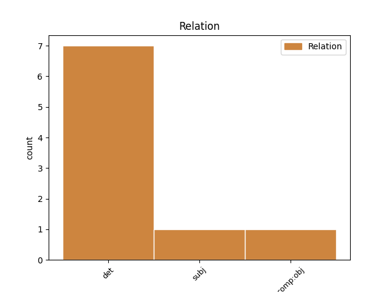
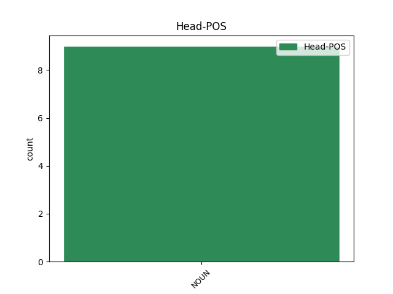
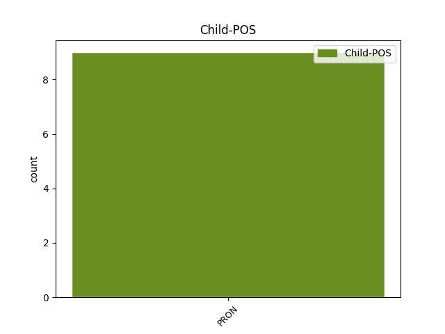

Distribution of features within this leaf



Agreement Rules sorted by frequency.
- When the dependent token is the determiner(det) of the head token, and the head token is NOUN and the dependent token is PRON.
1 Nagpag _ _ _ _ 0 _ _ _
2 - _ _ _ _ 0 _ _ _
3 alaman _ _ _ _ 0 _ _ _
4 niyang _ _ _ _ 0 _ _ _
5 nabaliw _ _ _ _ 0 _ _ _
6 ang _ _ _ _ 0 _ _ _
7 kaniyang kaniya NOUN _ Definite=Def|Gender=Masc|Number=Sing|Shared=Yes 0 _ _ _
8 ina ina PRON _ Case=Acc|Gender=Masc|Number=Sing|Person=3|PronType=Prs 7 det _ _
9 at _ _ _ _ 0 _ _ _
10 nagpagala _ _ _ _ 0 _ _ _
11 - _ _ _ _ 0 _ _ _
12 gala _ _ _ _ 0 _ _ _
13 sa _ _ _ _ 0 _ _ _
14 bayan _ _ _ _ 0 _ _ _
15 ng _ _ _ _ 0 _ _ _
16 San _ _ _ _ 0 _ _ _
17 Diego _ _ _ _ 0 _ _ _
18 . _ _ _ _ 0 _ _ _
1 Nang _ _ _ _ 0 _ _ _
2 dumating _ _ _ _ 0 _ _ _
3 si _ _ _ _ 0 _ _ _
4 Enlil _ _ _ _ 0 _ _ _
5 na _ _ _ _ 0 _ _ _
6 galit _ _ _ _ 0 _ _ _
7 na _ _ _ _ 0 _ _ _
8 may _ _ _ _ 0 _ _ _
9 mga _ _ _ _ 0 _ _ _
10 nakaligtas _ _ _ _ 0 _ _ _
11 , _ _ _ _ 0 _ _ _
12 kanyang _ _ _ _ 0 _ _ _
13 kinondena kinondena NOUN _ Case=Nom|Gender=Fem|Number=Sing 0 _ _ _
14 siya siya PRON _ Case=Nom|Gender=Fem|Number=Sing|Person=3|PronType=Prs 13 subj _ _
15 sa _ _ _ _ 0 _ _ _
16 pagpukaw _ _ _ _ 0 _ _ _
17 ng _ _ _ _ 0 _ _ _
18 baha _ _ _ _ 0 _ _ _
19 . _ _ _ _ 0 _ _ _
Disagree Examples:
1 Bagamat _ _ _ _ 0 _ _ _
2 maraming _ _ _ _ 0 _ _ _
3 haka _ _ _ _ 0 _ _ _
4 - _ _ _ _ 0 _ _ _
5 haka _ _ _ _ 0 _ _ _
6 sa _ _ _ _ 0 _ _ _
7 pagtanggi _ _ _ _ 0 _ _ _
8 ni _ _ _ _ 0 _ _ _
9 Samardzija _ _ _ _ 0 _ _ _
10 sa _ _ _ _ 0 _ _ _
11 NFL _ _ _ _ 0 _ _ _
12 , _ _ _ _ 0 _ _ _
13 madami _ _ _ _ 0 _ _ _
14 din _ _ _ _ 0 _ _ _
15 ang _ _ _ _ 0 _ _ _
16 nagsabi _ _ _ _ 0 _ _ _
17 na _ _ _ _ 0 _ _ _
18 mapapabilang mapapabilang NOUN _ Definite=Ind|Gender=Neut|Number=Sing 0 _ _ _
19 siya siyός PRON _ Case=Acc|Gender=Fem|Number=Sing|Person=3|PronType=Prs 18 comp:obj _ _
20 sa _ _ _ _ 0 _ _ _
21 2007 _ _ _ _ 0 _ _ _
22 NFL _ _ _ _ 0 _ _ _
23 Draft _ _ _ _ 0 _ _ _
24 . _ _ _ _ 0 _ _ _
1 Maagang _ _ _ _ 0 _ _ _
2 napansin _ _ _ _ 0 _ _ _
3 ni _ _ _ _ 0 _ _ _
4 Maximilian _ _ _ _ 0 _ _ _
5 Frederick _ _ _ _ 0 _ _ _
6 ang _ _ _ _ 0 _ _ _
7 talento _ _ _ _ 0 _ _ _
8 ni _ _ _ _ 0 _ _ _
9 Beethoven _ _ _ _ 0 _ _ _
10 , _ _ _ _ 0 _ _ _
11 at _ _ _ _ 0 _ _ _
12 pinondohan _ _ _ _ 0 _ _ _
13 at _ _ _ _ 0 _ _ _
14 masinenganyo masinengan NOUN _ Definite=Ind|Gender=Neut|Number=Sing 0 _ _ _
15 niya niya PRON _ Case=Gen|Gender=Masc|Number=Sing|Person=3|PronType=Prs 14 det _ _
16 ang _ _ _ _ 0 _ _ _
17 binata _ _ _ _ 0 _ _ _
18 sa _ _ _ _ 0 _ _ _
19 kanyang _ _ _ _ 0 _ _ _
20 pagaaral _ _ _ _ 0 _ _ _
21 sa _ _ _ _ 0 _ _ _
22 musika _ _ _ _ 0 _ _ _
23 . _ _ _ _ 0 _ _ _
1 Para _ _ _ _ 0 _ _ _
2 rito _ _ _ _ 0 _ _ _
3 , _ _ _ _ 0 _ _ _
4 gumamit _ _ _ _ 0 _ _ _
5 siya _ _ _ _ 0 _ _ _
6 ng _ _ _ _ 0 _ _ _
7 isang _ _ _ _ 0 _ _ _
8 prisma _ _ _ _ 0 _ _ _
9 at _ _ _ _ 0 _ _ _
10 mga _ _ _ _ 0 _ _ _
11 lente _ _ _ _ 0 _ _ _
12 na _ _ _ _ 0 _ _ _
13 nasa _ _ _ _ 0 _ _ _
14 fluorite _ _ _ _ 0 _ _ _
15 sa _ _ _ _ 0 _ _ _
16 halip _ _ _ _ 0 _ _ _
17 na _ _ _ _ 0 _ _ _
18 quartz _ _ _ _ 0 _ _ _
19 na _ _ _ _ 0 _ _ _
20 nakapagpahintulot _ _ _ _ 0 _ _ _
21 sa _ _ _ _ 0 _ _ _
22 sarili sarili NOUN _ Definite=Def|Gender=Fem|Number=Sing 0 _ _ _
23 niya niya PRON _ Case=Gen|Gender=Masc|Number=Sing|Person=3|PronType=Prs 22 det _ _
24 upang _ _ _ _ 0 _ _ _
25 maging _ _ _ _ 0 _ _ _
26 pinaka _ _ _ _ 0 _ _ _
27 unang _ _ _ _ 0 _ _ _
28 tao _ _ _ _ 0 _ _ _
29 na _ _ _ _ 0 _ _ _
30 makasukat _ _ _ _ 0 _ _ _
31 ng _ _ _ _ 0 _ _ _
32 ispektra _ _ _ _ 0 _ _ _
33 na _ _ _ _ 0 _ _ _
34 mababa _ _ _ _ 0 _ _ _
35 kaysa _ _ _ _ 0 _ _ _
36 sa _ _ _ _ 0 _ _ _
37 200 _ _ _ _ 0 _ _ _
38 nm _ _ _ _ 0 _ _ _
39 . _ _ _ _ 0 _ _ _
1 Pumasok _ _ _ _ 0 _ _ _
2 rin _ _ _ _ 0 _ _ _
3 siya _ _ _ _ 0 _ _ _
4 sa _ _ _ _ 0 _ _ _
5 Unibersidad _ _ _ _ 0 _ _ _
6 ng _ _ _ _ 0 _ _ _
7 Pilipinas _ _ _ _ 0 _ _ _
8 ( _ _ _ _ 0 _ _ _
9 Fine _ _ _ _ 0 _ _ _
10 Arts _ _ _ _ 0 _ _ _
11 ) _ _ _ _ 0 _ _ _
12 , _ _ _ _ 0 _ _ _
13 kung _ _ _ _ 0 _ _ _
14 saan _ _ _ _ 0 _ _ _
15 naging _ _ _ _ 0 _ _ _
16 guro guro NOUN _ Case=Nom|Gender=Neut|Number=Sing 0 _ _ _
17 niya niya PRON _ Case=Gen|Gender=Masc|Number=Sing|Person=3|PronType=Prs 16 det _ _
18 si _ _ _ _ 0 _ _ _
19 Fabian _ _ _ _ 0 _ _ _
20 de _ _ _ _ 0 _ _ _
21 la _ _ _ _ 0 _ _ _
22 Rosa _ _ _ _ 0 _ _ _
23 sa _ _ _ _ 0 _ _ _
24 pagpipinta _ _ _ _ 0 _ _ _
25 , _ _ _ _ 0 _ _ _
26 at _ _ _ _ 0 _ _ _
27 naging _ _ _ _ 0 _ _ _
28 kaklase _ _ _ _ 0 _ _ _
29 niya _ _ _ _ 0 _ _ _
30 naman _ _ _ _ 0 _ _ _
31 sina _ _ _ _ 0 _ _ _
32 Fernando _ _ _ _ 0 _ _ _
33 Amorsolo _ _ _ _ 0 _ _ _
34 at _ _ _ _ 0 _ _ _
35 Guillermo _ _ _ _ 0 _ _ _
36 Tolentino _ _ _ _ 0 _ _ _
37 . _ _ _ _ 0 _ _ _
1 Pumasok _ _ _ _ 0 _ _ _
2 rin _ _ _ _ 0 _ _ _
3 siya _ _ _ _ 0 _ _ _
4 sa _ _ _ _ 0 _ _ _
5 Unibersidad _ _ _ _ 0 _ _ _
6 ng _ _ _ _ 0 _ _ _
7 Pilipinas _ _ _ _ 0 _ _ _
8 ( _ _ _ _ 0 _ _ _
9 Fine _ _ _ _ 0 _ _ _
10 Arts _ _ _ _ 0 _ _ _
11 ) _ _ _ _ 0 _ _ _
12 , _ _ _ _ 0 _ _ _
13 kung _ _ _ _ 0 _ _ _
14 saan _ _ _ _ 0 _ _ _
15 naging _ _ _ _ 0 _ _ _
16 guro _ _ _ _ 0 _ _ _
17 niya _ _ _ _ 0 _ _ _
18 si _ _ _ _ 0 _ _ _
19 Fabian _ _ _ _ 0 _ _ _
20 de _ _ _ _ 0 _ _ _
21 la _ _ _ _ 0 _ _ _
22 Rosa _ _ _ _ 0 _ _ _
23 sa _ _ _ _ 0 _ _ _
24 pagpipinta _ _ _ _ 0 _ _ _
25 , _ _ _ _ 0 _ _ _
26 at _ _ _ _ 0 _ _ _
27 naging _ _ _ _ 0 _ _ _
28 kaklase kaklase NOUN _ Definite=Ind|Gender=Neut|Number=Sing 0 _ _ _
29 niya niya PRON _ Case=Gen|Gender=Masc|Number=Sing|Person=3|PronType=Prs 28 det _ _
30 naman _ _ _ _ 0 _ _ _
31 sina _ _ _ _ 0 _ _ _
32 Fernando _ _ _ _ 0 _ _ _
33 Amorsolo _ _ _ _ 0 _ _ _
34 at _ _ _ _ 0 _ _ _
35 Guillermo _ _ _ _ 0 _ _ _
36 Tolentino _ _ _ _ 0 _ _ _
37 . _ _ _ _ 0 _ _ _